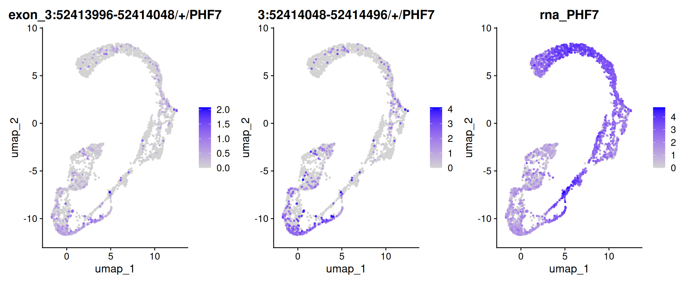

Spatial dissimilarity analysis for single-cell trajectories and supervised embeddings
In the previous vignette, we performed cell clustering using unsupervised methods. Typically, a PCA or integrated space (e.g., Harmony) is generated during this process, and we then calculate the cell weight matrix directly from the cell embedding space. This approach is convenient for running the pipeline, and provide the general result in all cell population. Furthermore, for specific signaling or biological pathways, it is often more informative to focus on a ‘supervised’ cell ordering. This vignette demonstrates how to perform spatial dissimilarity test in low-dimensional spaces, such as cell trajectory.
Prepare raw data
We used the human testis single-cell atlas dataset for this analysis. The full dataset is publicly available at GSE112013. For this vignette, we only used replicate 1.
## We first download the BAM files and GTF filewget-c https://sra-pub-src-1.s3.amazonaws.com/SRR6860519/14515X1.bam.1 -O donor1_rep1.bamwget-c https://sra-pub-src-1.s3.amazonaws.com/SRR6860520/14606X1.bam.1 -O donor1_rep2.bam## Please Note: we use a different annotation file from previos vignette, because the BAM file use NCBI style chromosome name here.wget https://ftp.ensembl.org/pub/release-114/gtf/homo_sapiens/Homo_sapiens.GRCh38.114.chr.gtf.gz## Index the bam files for track plotssamtools index donor1_rep1.bamsamtools index donor1_rep2.bam## Then we use PISA to generate feature countsPISA anno -gtf Homo_sapiens.GRCh38.114.chr.gtf.gz -exon-psi-o d1_rep2_anno.bam donor1_rep2.bamPISA anno -gtf Homo_sapiens.GRCh38.114.chr.gtf.gz -exon-psi-o d1_rep1_anno.bam donor1_rep1.bammkdir exp1mkdir exp2mkdir exon1mkdir exon2mkdir junction1mkdir junction2mkdir exclude1mkdir exclude2PISA count -tag CB -umi UB -anno-tag GN -outdir exp1 d1_rep1_anno.bamPISA count -tag CB -umi UB -anno-tag GN -outdir exp2 d1_rep2_anno.bamPISA count -tag CB -umi UB -anno-tag EX -outdir exon1 d1_rep1_anno.bamPISA count -tag CB -umi UB -anno-tag EX -outdir exon2 d1_rep2_anno.bamPISA count -tag CB -umi UB -anno-tag JC -outdir junction1 d1_rep1_anno.bamPISA count -tag CB -umi UB -anno-tag JC -outdir junction2 d1_rep2_anno.bam# Note: Although we generate the excluded reads here, we do not use them in this demonstration for the sake of simplicity. However, it is recommended to test them in real cases, so I’ve kept the data available for you to use in your own analyses.PISA count -tag CB -umi UB -anno-tag ER -outdir exclude1 d1_rep1_anno.bamPISA count -tag CB -umi UB -anno-tag ER -outdir exclude2 d1_rep2_anno.bam
We now select germline cells from the dataset and construct the cell development trajectory using a principal curve. Although there are many well-documented methods for constructing linear trajectories, here we use a straightforward and perhaps the simplest approach purely for demonstration purposes.
FeaturePlot(obj.sel, features =c("3:52413996-52414048/+/PHF7", "3:52414048-52414496/+/PHF7", "PHF7"), ncol=3, order=TRUE)
Warning: Could not find 3:52413996-52414048/+/PHF7 in the default search
locations, found in 'exon' assay instead
Warning: Could not find PHF7 in the default search locations, found in 'RNA'
assay instead

Perform alternative splicing on a supervised two dimension space
We can also perform the analysis using a supervised two-dimensional cell space. As an example, we utilize Seurat’s built-in cell cycle scoring scheme for demonstration purposes.